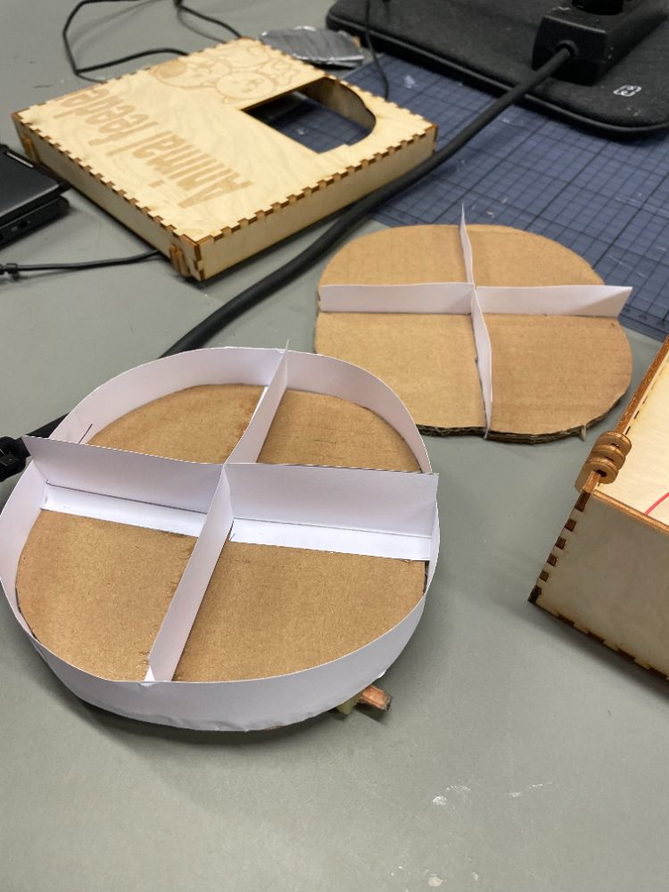
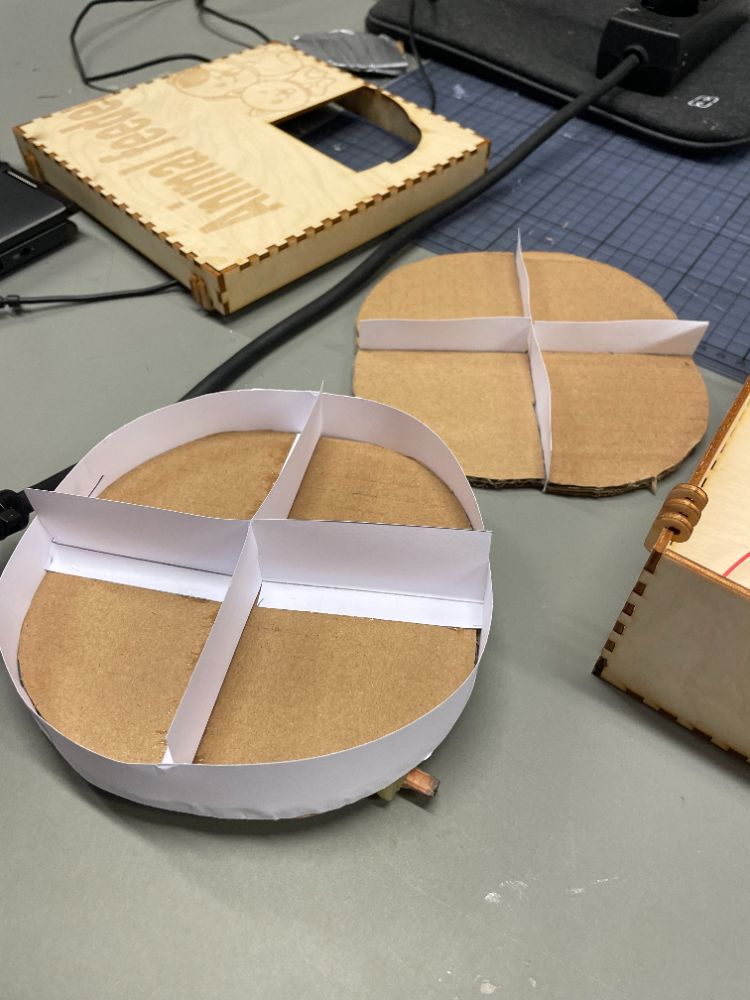

hallo ik ben
hallo ik ben

buiten mijn opleiding die ik doe, voetbal ik graag ik zit op VV Nieuwerkerk in het team van zaterdag 2. Ik sta rechts achterin de verdediging en we spelen in de 1ste klassen.
Naast voetballen ga ik ook elke week 3x naar de Basic Fit in mijn dorp. ik vind het belangrijk om gezond te blijven daarom sport ik zo veel.
als ik naast het sporten nog tijd over heb, probeer ik altijd nog wat te gamen met vrienden. mijn favoriete game is Call of Duty.
ik doe de opleiding Creative Media and Game Technology op de Hogeschool Rotterdam. Ik zit in het eerste jaar van een opleiding die 4 jaar duurt.
 
